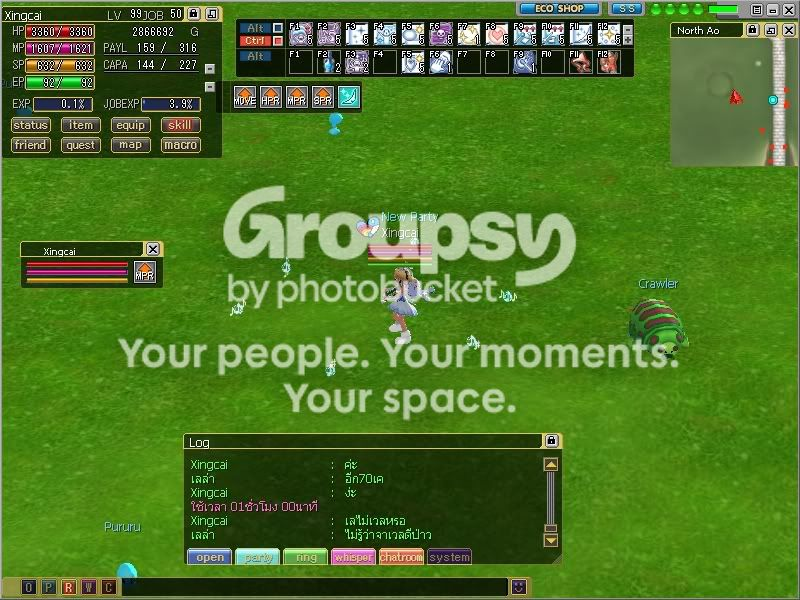

หน้า 4 จากทั้งหมด 11

โพสต์แล้ว:
พุธ 10 ธ.ค. 2008 8:34 pmโดย ECO
สู้ๆนะ

โพสต์แล้ว:
เสาร์ 13 ธ.ค. 2008 3:36 amโดย ECO
คือว่า อธิบายเกี่ยวกับ
Magic Seal ให้ละเอียดทีครับ สงสัยมาก ว่าเราใช้เเล้วติดดีเลย์เเล้วทางที่โดนใช้ไปจะติดเ
เท่าไหร่
ขอบคุณล่วงหน้าคร้าบ

โพสต์แล้ว:
เสาร์ 13 ธ.ค. 2008 3:12 pmโดย ECO
เมจิคซีล
เมื่อใช้ใส่เป้าหมาย เป้าหมายจะหยุดร่ายเวทย์
แล้วเป้าหมายจะติดดีเลย์น้อยมาก
ส่วนเราก็โดนดีเลย์ยาว - -*
(ไม่แน่ใจเลเวลสกิลเกี่ยวด้วยมั้ย)
แถมขัดสกรอล์ก็ไม่ได้
โพสต์แล้ว:
เสาร์ 13 ธ.ค. 2008 6:26 pmโดย ECO
เอาไว้ กัน เนโคร ซัฟมอนเเล้วอีวาอ่ะ
- -a โดนทริคผีเเล้วปลดบ่อยมาก
คนสิงรีเฟคใส่ให้ไม่ทันเลย ต้องจบทั้งสิง + +( NvN อ่ะ )
เเต่กะต้องขอบคุณมากๆครับ ที่โพสข้อมูลให้ต้องฝึกใช้อีกนาน

โพสต์แล้ว:
อาทิตย์ 14 ธ.ค. 2008 2:11 amโดย ECO
สรุปว่าตอนนี้ มันทำ x4 ได้รึยังน่ะครับ ใครมีก็ช่วยลองทีนะครับ
โพสต์แล้ว:
อาทิตย์ 14 ธ.ค. 2008 10:37 amโดย ECO
ในที่สุดก็มีคนทำไกล์พระซะที สู้ๆจ้า

โพสต์แล้ว:
อาทิตย์ 14 ธ.ค. 2008 11:52 amโดย ECO
อีกนานม่ะนิ กว่าจะตรึงทำป็นบอรดพระ - -a

โพสต์แล้ว:
จันทร์ 15 ธ.ค. 2008 1:43 amโดย ECO
Magic Seal เมื่อ mob โดนแล้วดีเลย์จะน้อยมาก ๆ ครับ = ="
อาจเรียกได้ว่าสกิลขัดเวทย์ซะมากกว่าด้วยครับ เหมาะกับบอสที่่ร่ายเวทย์ทั้งหลาย
แล้วก็เวลาใช้ก็คิดดี ๆ ด้วยเน้อ เพราะดีเลย์นานจนน่าใจหาย
บางครั้งอาจจะตายก่อนเพราะดีเลย์ (เคยเป็นมาแล้วกับตัว) - -|||
ส่วนเรื่อง LV ของ Magic Seal ลด Delay ของสกิลที่ใช้ไปครับ ส่วนระยะเวลาในการขัดจะเพิ่มไหมนั้นไม่แน่ใจครับ
โพสต์แล้ว:
จันทร์ 15 ธ.ค. 2008 4:29 amโดย ECO
เท่าที่รู้สึกมานะ
ทั้งเรา ทั้งเป้าหมาย จะติดดีเลย์เท่าๆ กันแฮะ
สามารถรอใช้ต่อได้เลย ไม่ต้องกลัว
ในกรณีที่ใช้รุมชาวบ้าน~*

โพสต์แล้ว:
จันทร์ 15 ธ.ค. 2008 11:16 amโดย ECO
ตอนเลเวลตันที่65 สกิลMagic Seal(max lv.3) เอาไว้ล่าบอสหมาดำ กับนก มีสกิลเดียว ล่าบอสสบายเลย เดี๋ยวนี้อาจถูกลืมไปเพราะเลเวลเยอะ พระเลยถึกๆกันทั้งนั้น โดนเวทย์กันเบาเลยไม่ค่อยสนใจจะขัดเวทย์ และอีกปัญหาของสกิล Magic Seal คือเกิดดีเลย์หลังใช้สกิล เหมือนตอนเราใช้สกิลเร่งเสร็จแล้วจะใช้สกิลไรต่อไม่ได้ซักพัก ยิ่งเลเวลของสกิลMagic Sealสูง ดีเลย์หลังใช้สกิลยิ่งน้อย ถ้าจำไม่ผิดดีเลย์ประมาณเกือบเท่าสกิลเร่ง
โพสต์แล้ว:
อังคาร 16 ธ.ค. 2008 12:09 pmโดย ECO
เงียบเหงาจรางงง
เมื่อไหร่จะปักหมุดหนอ =w=
ถามมุมมองนี้มั่งดีกว่า
มาช่วยกันคิดดีกว่า
สเตตัสอะไรมั่ง ที่ Ares แก้ไม่ได้
รู้อยู่อันเดียว เกร็ง
เหมือนว่า Deadly Poison อีกอันด้วยมั้ง
โพสต์แล้ว:
อังคาร 16 ธ.ค. 2008 6:03 pmโดย ECO
สเตตัสที่ไม่มีResistให้อัพไว้กันมั้งครับ - -*
โพสต์แล้ว:
พุธ 17 ธ.ค. 2008 5:50 pmโดย ECO
รูปนี้เป็นรูปใช้ Dead march แบบไม่เซน อีวิล และดาบมืด

รูปนี้ ใส่เซนเข้าไปแต่ไม่ อีวิลและดาบมืดค่ะ

รูปนี้ดาบมืด+อีวิล แต่ไม่เซนค่ะ ดาเมจ พอๆกับเซนเลย

พอ เซน+ดาบมืดและอีวิล ดาเมจก็ขึ้นตามรูป

แรงมากเลย

โพสต์แล้ว:
พุธ 17 ธ.ค. 2008 5:54 pmโดย ECO
อุ
พระเกมนี้โหดขิงๆ
โพสต์แล้ว:
พุธ 17 ธ.ค. 2008 5:55 pmโดย ECO
Aussibum เขียน:ชื่อกระทู้ยังไม่ได้บอกว่าเป็นไกด์ เพราะ มันยังดูไม่สมบูรณ์พอที่จะเปิด
ป.ล อยากได้รูปสกิวเพลง อะ แต่อยากได้ภาพใหญ่ๆ(แต่ไม่ต้องใหญ่เวอร์) กะสกิวอื่นๆ พร้อมไอคอนของสกิวนั้นๆ (เช่น สกิวบัฟสเตต เร่ง หรือ สกิวที่โดนสาปจับ ตัวโน๊ตสีชมพู เป้นต้น)
ขอความอนุเคราะห์ด้วย ไม่ได้เล่นพระเลย แต่ว่าน้องในริงถามสกิวประจำ จนพอรู้ข้อมูลบ้าง(ไม่อยากเล่นพระเพราะกลัวจะให้เล่นพระเป็นตัวหลัก - -' )
รูปแรกสกิล Fusion
รูปที่สองสกิลpop

สองสกิลนี้ต่างกันแค่สีของสกิล